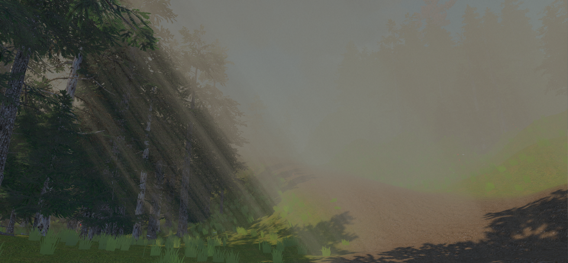

The Heart of the Garden
A short first-person atmospheric puzzle adventure I designed and built solo as a birthday gift for my girlfriend. The world only exists because the player is paying attention to it, and every puzzle is built on that idea.

- Role
-
Solo game designer and developer
(Music: Alejandra Bec) - Timeline
- Four months
Oct 13, 2025 to Feb 18, 2026 - Playtime
- 10 to 20 minutes
- Tools
- Unity 6 (URP), C#
The design problem
I wanted someone to feel what it was like when my life changed after meeting her, without any exposition. The game opens in an empty white void and only gains color after a single text message arrives. That gave me one rule to design around: “My life only began after you.” The hard part was turning this feeling into puzzles that can still be solved by someone who doesn't know the story.
Key decisions
Mechanics as metaphors
Non-Euclidean tricks stand in for fragile memory and attention. In the Mirror Room, five mirrors lead to five small worlds. In one, the maze exit only appears once you look behind you. Another is a “bridge of faith” whose platforms appear only as you step on them. Each mirror gives you one object, and together they complete a constellation in the main room.
I had a tight deadline and was still learning as I built, so I simplified the puzzle ideas to what I could make work reliably. The Repeating Room was meant to be a longer puzzle in which the player would collect pieces from each stage of a room that degrades the further you go. With a solo scope, I built a simpler version instead, where the player walks through the degrading room to reach an item at the end. The room still carries the idea that time is slipping away, and it took a fraction of the time to build.
A phone instead of dialogue
The story starts with a text message that is only heard. The player finds a phone in an empty white void, it vibrates, and the world begins to form. I chose a phone because that's where the relationship began, and because it let me tell the story through the environment and the puzzles, with no dialogue boxes or cutscenes.
Art rules to fit the solo scope
Each chapter has one dominant hue, flat colors, gradient ramps and fog. This kept the build light for low-end PCs and let color carry the emotional arc, from white void to pale-blue mirrors to a fully colored garden, carrying the idea that “the world gains color the more I'm with you.”
What I'd change
I rushed it, and it shows. All five chapters shipped, but the last one, The Letter, got the least attention. I'd rework it first, because the whole game builds toward it, and right now it doesn't hold the player's attention as well as it should. The puzzles also need clearer environmental hints. My own final to-do list called for a hint on the bridge and a hint that the light beam should end at the tree. With more time I'd playtest it properly and fix the known bugs, starting with Chapter 3, which is still the buggiest.